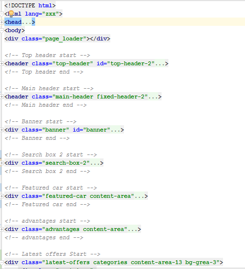
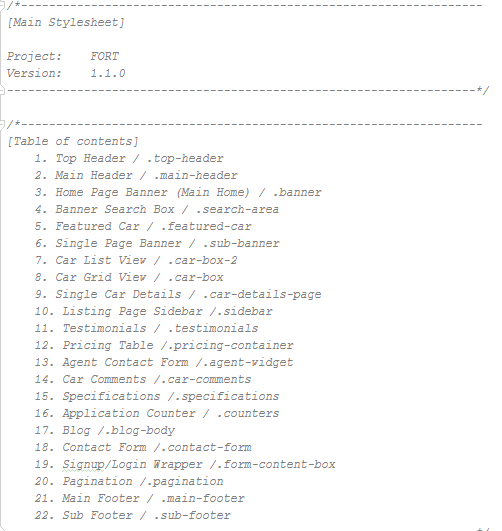
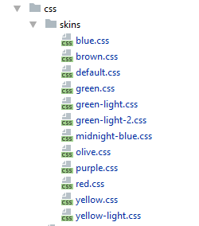

xDesk is the HTML template which is built with the bootstrap framework (version: 4.0). xDesk template provides three different layouts of HOME page. It contains 30+ individual HTML pages with 100% responsive & W3C HTML validate coding. All HTML & CSS codes are commented properly so it's easily editable.
The template made with twitter bootstrap framework (version 4.0.0). And some jQuery plugin to give a nice look and functionality. We use Google Font, Flaticon, Font Awesome Icon to make the template. You must have to keep all these dependencies if you wish the template work same to you as preview.
The template created with the help of:
File Structure is like:
The Hole HTML is properly commented (with starting and ending comment). So you can easily find your necessary code and change easily.

The Style css contain a well table of content about inner contents.

I use some short of JS files to configure the template. Such as
The template is available in 12 different color.

You can find all of the color schema in css/skins folder. by default default.css is activated, but you can choose any of them with your template.
Thanks to buy our template. If you have any problem to integrate this template or need any help about the template free to contact.
Mail to: themevessel.us@gmail.com